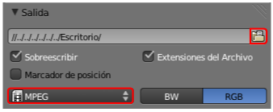

Ola
Supongamos una esfera (Añadir/Malla/Esfera UV) a la que le asignamos un modificador Ola.

La esfera sufre una deformación inmediata debido a que las opciones Movimiento X e Y están activadas.
Además de la deformación se ha generado automáticamente una animación asociada al objeto. Para ponerla en marcha en el editor Vista 3D usamos el menú Vista/Reproducir animación (o el atajo "Alt_A"). Usamos "Esc" para salir.
Incluso mientras se reproduce la animación es posible alterar parámetros y opciones del modificador.
Vamos con una aplicación concreta.
Creamos un cubo (Agregar/Malla/Cubo) y en Modo Edición  le añadimos varios bucles ("Control_R") alineados con el eje X. Recordamos que para añadir varios bucles a la vez hacemos rodar la rueda del ratón en el momento en el que el bucle virtual está de color fucsia.
le añadimos varios bucles ("Control_R") alineados con el eje X. Recordamos que para añadir varios bucles a la vez hacemos rodar la rueda del ratón en el momento en el que el bucle virtual está de color fucsia.
Ahora vamos a escalar en Z para que sea una plancha fina; pero el escalado lo hacemos desde Modo Edición  , así que seleccionamos todos los vértices ("A") y después escalamos ("SZ").
, así que seleccionamos todos los vértices ("A") y después escalamos ("SZ").
Pasamos a Modo Objeto  y le asignamos el modificador Ola. Nuestra malla se deforma ligeramente tal y como le pasó antes a la esfera. Nos proponemos representar la longitud de onda del color rojo del espectro. Ni mucho menos queremos una representación exacta, lo que nos interesa es representar en el mismo gráfico la diferencia entre esta y la del color rojo (mucho menos amplia).
y le asignamos el modificador Ola. Nuestra malla se deforma ligeramente tal y como le pasó antes a la esfera. Nos proponemos representar la longitud de onda del color rojo del espectro. Ni mucho menos queremos una representación exacta, lo que nos interesa es representar en el mismo gráfico la diferencia entre esta y la del color rojo (mucho menos amplia).
Como los nuevos bucles se crearon paralelos al eje X vamos a hacer que las ondas sólo se generen en ese eje, así que desactivamos Movimiento: Y.
En la parte de abajo de las opciones definimos:
- Velocidad: 0.10. Para que vaya lento y se pueda apreciar bien el concepto de la longitud de onda.
- Altura: 1.00. Es decir, la altura de las crestas de la longitud de onda.
- Ancho: 2.00. La longitud de onda propiamente dicha, es decir, la distancia entre cresta y cresta.
- Estrechez: 0.85. Este parámetro determina la distancia entre la cresta y el valle de la onda. Con este valor conseguimos que quede muy simétrica. Si no editamos este parámetro es muy probable que la onda se parezca más a un cardiograma que al efecto constante que buscamos.
No estaría mal perfeccionar la malla con un modificador Subdivisión, con el sombreado Suave, y con unos nuevos bucles en las zonas necesarias presentará este aspecto.
Antes de asignarle material duplicamos el objeto ("Shift_D") y lo desplazamos en Z.
A este segundo duplicado le cambiamos el parámetro Ancho del modificador Ola. La longitud de onda del color violeta es más estrecha. Variamos:
- Ancho. De 2.00 a 1.00.
- Estrechez. De 0.85 a 1.64.
Puede que al poner en marcha la animación ("Alt_A") parezca de que esta nueva longitud de onda va más rápido que la de arriba pero es sólo una ilusión óptica. La prueba es que no hemos alterado el parámetro Velocidad.
Al objeto de arriba le asignamos un color FF0000 y al de abajo un E700E5.
El resto del trabajo se resume en crear la escena final.
Todos los objetos del fondo tienen desactivada la opción Trazable en la botonera Opciones en su correspondiente Material  . Esto hace que no proyecten sombra sobre el plano de fondo. También tienen el valor de Intensidad de Especular a 0.000. Todo esto es para que el fondo sea lo más homogéneo posible y no se generen ni brillos ni sombras que impidan la lectura de la información. Un ejemplo:
. Esto hace que no proyecten sombra sobre el plano de fondo. También tienen el valor de Intensidad de Especular a 0.000. Todo esto es para que el fondo sea lo más homogéneo posible y no se generen ni brillos ni sombras que impidan la lectura de la información. Un ejemplo:
Lo iluminamos con la habitual iluminación básica y pasamos a preparar la animación final en el panel Render  :
:
- La ruta de destino para el vídeo final. Usamos como es habitual el icono
 de la botonera Salida.
de la botonera Salida.
- El formato de salida. Optamos por MPEG con el que se obtienen vídeos de buena calidad y muy poco peso.

- En la botonera Configuración nos aseguramos de que se generen archivos MP4 (MPEG-4) tal y cómo se indica en la siguiente imagen.
- Número de fotogramas. En la botonera Dimensiones decidimos el fotograma de inicio (Cuadro inicial) y el último (Cuadro final). Por defecto Blender trae esa configuración (1-250) pero podemos cambiar a nuestro gusto. Nosotros no lo cambiamos. Como la Velocidad de refresco, situada algo más abajo va a ser de 24fps (frames per second - fotogramas por segundo) estaremos creando una animación de unos 10,5 segundos.
Tras elegir la Resolución, preparamos bien el encuadre y damos la orden de generar los 250 fotogramas con el botón Animación.
El premio a nuestro trabajo (y paciencia con los renders) lo encontramos en la carpeta de destino tras finalizar el proceso.